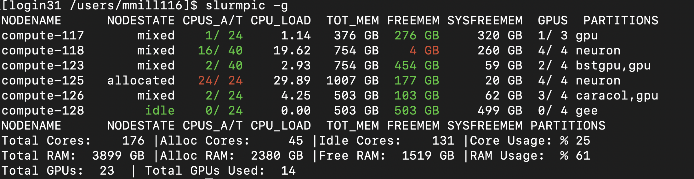

Using GPUs on JHPCE
We have a number of GPU nodes on the JHPCE cluster that are available for general use. Below is the process for accessing the GPU node with an interactive session, and a couple of examples of running programs and submitting jobs that utilizes a GPU.
From the JHPCE SLURM cluster login node, you can access a GPU node interactively by using the “–partition gpu” and “–gpus” options to the srun command. You can also supply traditional options to srun, and you may find that you need to request additional system RAM for your program to run. Here is an example of how to request a single GPU on the “gpu” partition. You can run “nvidia-smi” to see the GPU that you’ve been assigned.
[login31 /users/mmill116]$ srun --pty --x11 --partition gpu --gpus=1 --mem=20G bash
[compute-117 /users/mmill116]$ nvidia-smi
Tue Nov 28 08:39:23 2023
+---------------------------------------------------------------------------------------+
| NVIDIA-SMI 535.86.10 Driver Version: 535.86.10 CUDA Version: 12.2 |
|-----------------------------------------+----------------------+----------------------+
| GPU Name Persistence-M | Bus-Id Disp.A | Volatile Uncorr. ECC |
| Fan Temp Perf Pwr:Usage/Cap | Memory-Usage | GPU-Util Compute M. |
| | | MIG M. |
|=========================================+======================+======================|
| 0 Tesla V100-PCIE-32GB On | 00000000:89:00.0 Off | 0 |
| N/A 41C P0 28W / 250W | 0MiB / 32768MiB | 0% Default |
| | | N/A |
+-----------------------------------------+----------------------+----------------------+
+---------------------------------------------------------------------------------------+
| Processes: |
| GPU GI CI PID Type Process name GPU Memory |
| ID ID Usage |
|=======================================================================================|
| No running processes found |
+---------------------------------------------------------------------------------------+
As of November 2024, we have the following GPUs available on the gpu partition:
| Node Name | Description | GPU Count |
| compute-117 | Our first GPU node. 2 Intel(R) Xeon(R) Silver 4116 CPUs and 384GB of RAM |
2 Nvidia V100 GPUs with 32GB RAM 1 Nvidia Titan V with 11GB RAM |
| compute-123 | The first Biostat GPU node 2 Intel(R) Xeon(R) Silver 4210R CPUs and 768GB of RAM |
4 Nvidia V100s GPUs with 32GB RAM |
| compute-126 | One of the Lieber (Collado) GPU node 2 Intel(R) Xeon(R) Gold 5317 CPUs and 512GB of RAM |
4 Nvidia A100 GPUs with 80GB RAM |
| compute-170 | The second Biostat GPU node 1 Intel(R) Xeon(R) Silver 4510R CPUs and 1TB of RAM |
2 Nvidia H100s GPUs with 96GB RAM |
| compute-171 - compute-173 | Group of 3 Biostat GPU nodes, sharing GPUs with the general gpu queue. 1 AMD EPYC 7443P CPUs and 1TB of RAM (each node) |
12 Nvidia L40S GPUs with 46GB RAM - 4 GPUs in each node |
You can request a particular model of GPU using the "GRES" option (Generic Resources) to srun and sbatch. The following GRES options are available for the various models of GPUS:
| GPU Type | GRES Option |
| Nvidia Titan V with 11GB RAM | titanv |
| Nvidia V100 with 32GB RAM | tesv100 |
| Nvidia V100S with 32GB RAM | tesv100s |
| Nvidia A100 with 80GB RAM | tesa100 |
| Nvidia H100 with 96GB RAM | tesh100 |
| Nvidia L40S with 46GB RAM | l40s |
NVIDIA assigns different "Computing Capability" values to each GPU model. These values can be found here, and help one determine what the GPU is capable of doing. Details can be found here. Specific descriptions for each generation as well as some specific CUDA routines to use with each are here: 7.x, 8.x, and 9.x
| GPU Type | GRES Option | Computing Capability |
| Nvidia Titan V with 11GB RAM | titanv | 7.0 |
| Nvidia V100 with 32GB RAM | tesv100 | 7.0 |
| Nvidia V100S with 32GB RAM | tesv100s | 7.0 |
| Nvidia A100 with 80GB RAM | tesa100 | 8.0 |
| Nvidia H100 with 96GB RAM | tesh100 | 9.0 |
| Nvidia L40S with 46GB RAM | l40s | 8.9 |
You can see what GPUs are available by running the slurmpic -g command.
The GPUS column will show how many GPUs are in use and how many are available
on each node:

One commonly used option when using GPUs in a SLURM environment is the --gpu-bind=closest
option. This will make sure the core/CPU that is assigned to your job is the closest one to the controling bus that the GPU is on. So if you are trying to get the most out of the performance of your GPU code, this option may be helpful. There is a really good description of GPU/CORE binding at https://pawsey.atlassian.net/wiki/spaces/US/pages/51929056/Example+Slurm+Batch+Scripts+for+Setonix+on+GPU+Compute+Nodes
You will also notice that there are several partitions with GPUs in them. By default all users should only access the "gpu" partition. The other partitions ar PI-specific partitions for groups that have purchases GPUs for the JHPCE cluster.
So, in order request a particular model of GPU you would use the value in the “GRES Option” column above to srun or sbatch. In general it is better to allow the cluster to assign an available gpu to you rather than requesting a particular model, as certain models may not be available at the time you are trying to run your program. In the below example, we are requesting an Nvidia Titan V GPU.
[login31 /users/mmill116]$ srun --pty --x11 --partition gpu --gres=gpu:titanv:1 bash
[compute-117 /users/mmill116]$ nvidia-smi
Tue Nov 28 10:50:25 2023
+---------------------------------------------------------------------------------------+
| NVIDIA-SMI 535.86.10 Driver Version: 535.86.10 CUDA Version: 12.2 |
|-----------------------------------------+----------------------+----------------------+
| GPU Name Persistence-M | Bus-Id Disp.A | Volatile Uncorr. ECC |
| Fan Temp Perf Pwr:Usage/Cap | Memory-Usage | GPU-Util Compute M. |
| | | MIG M. |
|=========================================+======================+======================|
| 0 NVIDIA TITAN V On | 00000000:B1:00.0 Off | N/A |
| 28% 35C P8 26W / 250W | 0MiB / 12288MiB | 0% Default |
| | | N/A |
+-----------------------------------------+----------------------+----------------------+
+---------------------------------------------------------------------------------------+
| Processes: |
| GPU GI CI PID Type Process name GPU Memory |
| ID ID Usage |
|=======================================================================================|
| No running processes found |
+---------------------------------------------------------------------------------------+
Another option for for requesting a particular GPU model is to use the "--constraints" option to request a particular Node Feature defined for the node. This is especially helpful when you want to select a number of GPU models that would be acceptible to you to use. For example, one could run the folloing to request a node with either an l40s, tesv100, or titanv.
[mmill116@jhpce01 ~]$ srun --pty -p gpu --gpus=1 --constrain="l40s|tesv100|titanv" bash
You can read more about using features at https://jhpce.jhu.edu/slurm/node-features/
At this point you can start running your GPU specific code. You can either use install your own GPU-enabled programs, or use the version of python that is installed on the GPU nodes.
Below is an example of running an MNIST tensorflow program. The tensorflow and keras python modules have been installed on the GPU nodes, so you can use the default system version of python. This example comes from https://www.tensorflow.org/tutorials/quickstart/beginner
[login31 /users/mmill116]$ srun --pty --x11 --partition gpu --gpus=1 --mem=10G bash
[compute-117 /users/mmill116]$ python
Python 3.9.16 (main, Dec 8 2022, 00:00:00)
[GCC 11.3.1 20221121 (Red Hat 11.3.1-4)] on linux
Type "help", "copyright", "credits" or "license" for more information.
>>> import tensorflow as tf
2023-11-28 09:05:16.067766: I tensorflow/core/platform/cpu_feature_guard.cc:182] This TensorFlow binary is optimized to use available CPU instructions in performance-critical operations.
To enable the following instructions: AVX2 AVX512F FMA, in other operations, rebuild TensorFlow with the appropriate compiler flags.
2023-11-28 09:05:16.850666: W tensorflow/compiler/tf2tensorrt/utils/py_utils.cc:38] TF-TRT Warning: Could not find TensorRT
>>> mnist = tf.keras.datasets.mnist
>>> (x_train, y_train), (x_test, y_test) = mnist.load_data()
>>> x_train, x_test = x_train / 255.0, x_test / 255.0
>>> model = tf.keras.models.Sequential([
... tf.keras.layers.Flatten(input_shape=(28, 28)),
... tf.keras.layers.Dense(128, activation='relu'),
... tf.keras.layers.Dropout(0.2),
... tf.keras.layers.Dense(10)
... ])
2023-11-28 09:05:31.942590: I tensorflow/core/common_runtime/gpu/gpu_device.cc:1639] Created device /job:localhost/replica:0/task:0/device:GPU:0 with 31141 MB memory: -> device: 0, name: Tesla V100-PCIE-32GB, pci bus id: 0000:89:00.0, compute capability: 7.0
>>> predictions = model(x_train[:1]).numpy()
>>> predictions
array([[-0.745112 , 0.49414337, -0.10749201, -0.23818162, 0.2159372 ,
-0.38107562, 0.8540315 , -0.21077928, 0.04448523, 0.37432173]],
dtype=float32)
>>> tf.nn.softmax(predictions).numpy()
array([[0.0417023 , 0.14399974, 0.07889961, 0.06923362, 0.10902808,
0.06001488, 0.206376 , 0.07115702, 0.09184969, 0.12773912]],
dtype=float32)
>>> loss_fn = tf.keras.losses.SparseCategoricalCrossentropy(from_logits=True)
>>> loss_fn(y_train[:1], predictions).numpy()
2.8131628
>>> model.compile(optimizer='adam',
... loss=loss_fn,
... metrics=['accuracy'])
>>> model.fit(x_train, y_train, epochs=5)
Epoch 1/5
2023-11-28 09:06:00.300076: I tensorflow/compiler/xla/service/service.cc:168] XLA service 0x7fee20069290 initialized for platform CUDA (this does not guarantee that XLA will be used). Devices:
2023-11-28 09:06:00.300099: I tensorflow/compiler/xla/service/service.cc:176] StreamExecutor device (0): Tesla V100-PCIE-32GB, Compute Capability 7.0
2023-11-28 09:06:00.305647: I tensorflow/compiler/mlir/tensorflow/utils/dump_mlir_util.cc:255] disabling MLIR crash reproducer, set env var `MLIR_CRASH_REPRODUCER_DIRECTORY` to enable.
2023-11-28 09:06:00.371150: I tensorflow/compiler/xla/stream_executor/cuda/cuda_dnn.cc:432] Loaded cuDNN version 8904
2023-11-28 09:06:00.442691: I tensorflow/tsl/platform/default/subprocess.cc:304] Start cannot spawn child process: No such file or directory
2023-11-28 09:06:00.535627: I ./tensorflow/compiler/jit/device_compiler.h:186] Compiled cluster using XLA! This line is logged at most once for the lifetime of the process.
1875/1875 [==============================] - 5s 2ms/step - loss: 0.2931 - accuracy: 0.9150
Epoch 2/5
1875/1875 [==============================] - 4s 2ms/step - loss: 0.1395 - accuracy: 0.9597
Epoch 3/5
1875/1875 [==============================] - 4s 2ms/step - loss: 0.1070 - accuracy: 0.9678
Epoch 4/5
1875/1875 [==============================] - 4s 2ms/step - loss: 0.0877 - accuracy: 0.9729
Epoch 5/5
1875/1875 [==============================] - 4s 2ms/step - loss: 0.0754 - accuracy: 0.9764
<keras.src.callbacks.History object at 0x7feef9f09550>
>>> model.evaluate(x_test, y_test, verbose=2)
313/313 - 1s - loss: 0.0714 - accuracy: 0.9756 - 600ms/epoch - 2ms/step
[0.07143650203943253, 0.975600004196167]
>>> You can also submit a batch job to the cluster that uses GPUs. In this example of submitting a batch job to use a GPU, we are creating 2 files, one containing the python steps that we used above, and the second containing a shell script that will be submitted to SLURM. The Python program looks like:
[login31 /users/mmill116/gpu-test]$ ls -al
total 496
drwxr-xr-x 2 mmill116 mmi 4 Nov 28 11:49 .
drwxr-x---+ 214 mmill116 mmi 412 Nov 28 11:49 ..
-rw-r--r-- 1 mmill116 mmi 789 Nov 28 11:47 nvidia-test.py
-rwxr-xr-x 1 mmill116 mmi 343 Nov 28 11:49 test-slurm-gpu.sh
[login31 /users/mmill116/gpu-test]$ cat nvidia-test.py
import tensorflow as tf
print("TensorFlow version:", tf.__version__)
mnist = tf.keras.datasets.mnist
(x_train, y_train), (x_test, y_test) = mnist.load_data()
x_train, x_test = x_train / 255.0, x_test / 255.0
model = tf.keras.models.Sequential([
tf.keras.layers.Flatten(input_shape=(28, 28)),
tf.keras.layers.Dense(128, activation='relu'),
tf.keras.layers.Dropout(0.2),
tf.keras.layers.Dense(10)
])
predictions = model(x_train[:1]).numpy()
predictions
tf.nn.softmax(predictions).numpy()
loss_fn = tf.keras.losses.SparseCategoricalCrossentropy(from_logits=True)
loss_fn(y_train[:1], predictions).numpy()
model.compile(optimizer='adam',
loss=loss_fn,
metrics=['accuracy'])
model.fit(x_train, y_train, epochs=5)
model.evaluate(x_test, y_test, verbose=2)
The script that will be used to submit to SLURM looks like. At this point you need to include the LD_LIBRARY_PATH environemnt variable if you will be using the system version of python:
>[login31 /users/mmill116/gpu-test]$ cat test-slurm-gpu.sh
!/bin/sh
SBATCH --partition=gpu
SBATCH --gres=gpu:titanv:1
echo $CUDA_VISIBLE_DEVICES
cd $HOME/gpu-test
nvidia-smi
export LD_LIBRARY_PATH=/jhpce/shared/jhpce/core/JHPCE_tools/3.0/lib:/usr/local/lib/python3.9/site-packages/nvidia/cudnn/lib:/jhpce/shared/jhpce/core/conda/miniconda3-23.3.1/envs/cudatoolkit-11.8.0/lib
python nvidia-test.py
You can now use “sbatch” to submit the job, and examine the results.
[login31 /users/mmill116/gpu-test]$ sbatch test-slurm-gpu.sh
Submitted batch job 915238
[login31 /users/mmill116/gpu-test]$ squeue --me
JOBID PARTITION NAME USER ST TIME NODES NODELIST(REASON)
915238 gpu test-slu mmill116 R 0:06 1 compute-117
[login31 /users/mmill116/gpu-test]$ ls
nvidia-test.py slurm-915238.out test-slurm-gpu.sh
[login31 /users/mmill116/gpu-test]$ squeue --me
JOBID PARTITION NAME USER ST TIME NODES NODELIST(REASON)
915238 gpu test-slu mmill116 R 0:21 1 compute-117
[login31 /users/mmill116/gpu-test]$ squeue --me
JOBID PARTITION NAME USER ST TIME NODES NODELIST(REASON)
[login31 /users/mmill116/gpu-test]$ ls
nvidia-test.py slurm-915238.out test-slurm-gpu.sh
[login31 /users/mmill116/gpu-test]$ cat slurm-915238.out
0
Tue Nov 28 11:55:08 2023
+---------------------------------------------------------------------------------------+
| NVIDIA-SMI 535.86.10 Driver Version: 535.86.10 CUDA Version: 12.2 |
|-----------------------------------------+----------------------+----------------------+
| GPU Name Persistence-M | Bus-Id Disp.A | Volatile Uncorr. ECC |
| Fan Temp Perf Pwr:Usage/Cap | Memory-Usage | GPU-Util Compute M. |
| | | MIG M. |
|=========================================+======================+======================|
| 0 NVIDIA TITAN V On | 00000000:B1:00.0 Off | N/A |
| 28% 35C P8 26W / 250W | 0MiB / 12288MiB | 0% Default |
| | | N/A |
+-----------------------------------------+----------------------+----------------------+
+---------------------------------------------------------------------------------------+
| Processes: |
| GPU GI CI PID Type Process name GPU Memory |
| ID ID Usage |
|=======================================================================================|
| No running processes found |
+---------------------------------------------------------------------------------------+
2023-11-28 11:55:08.645381: I tensorflow/core/platform/cpu_feature_guard.cc:182] This TensorFlow binary is optimized to use available CPU instructions in performance-critical operations.
To enable the following instructions: AVX2 AVX512F FMA, in other operations, rebuild TensorFlow with the appropriate compiler flags.
2023-11-28 11:55:09.449932: W tensorflow/compiler/tf2tensorrt/utils/py_utils.cc:38] TF-TRT Warning: Could not find TensorRT
2023-11-28 11:55:10.803612: I tensorflow/core/common_runtime/gpu/gpu_device.cc:1639] Created device /job:localhost/replica:0/task:0/device:GPU:0 with 10696 MB memory: -> device: 0, name: NVIDIA TITAN V, pci bus id: 0000:b1:00.0, compute capability: 7.0
TensorFlow version: 2.13.0
Epoch 1/5
2023-11-28 11:55:11.914159: I tensorflow/compiler/xla/service/service.cc:168] XLA service 0x7ff35c066ba0 initialized for platform CUDA (this does not guarantee that XLA will be used). Devices:
2023-11-28 11:55:11.914504: I tensorflow/compiler/xla/service/service.cc:176] StreamExecutor device (0): NVIDIA TITAN V, Compute Capability 7.0
2023-11-28 11:55:11.920545: I tensorflow/compiler/mlir/tensorflow/utils/dump_mlir_util.cc:255] disabling MLIR crash reproducer, set env var MLIR_CRASH_REPRODUCER_DIRECTORY to enable.
2023-11-28 11:55:11.985098: I tensorflow/compiler/xla/stream_executor/cuda/cuda_dnn.cc:432] Loaded cuDNN version 8904
2023-11-28 11:55:12.057397: I tensorflow/tsl/platform/default/subprocess.cc:304] Start cannot spawn child process: No such file or directory
2023-11-28 11:55:12.148968: I ./tensorflow/compiler/jit/device_compiler.h:186] Compiled cluster using XLA! This line is logged at most once for the lifetime of the process.
1875/1875 [==============================] - 5s 2ms/step - loss: 0.2948 - accuracy: 0.9142
Epoch 2/5
1875/1875 [==============================] - 4s 2ms/step - loss: 0.1433 - accuracy: 0.9574
Epoch 3/5
1875/1875 [==============================] - 4s 2ms/step - loss: 0.1078 - accuracy: 0.9675
Epoch 4/5
1875/1875 [==============================] - 4s 2ms/step - loss: 0.0884 - accuracy: 0.9725
Epoch 5/5
1875/1875 [==============================] - 4s 2ms/step - loss: 0.0751 - accuracy: 0.9769
313/313 - 1s - loss: 0.0713 - accuracy: 0.9780 - 600ms/epoch - 2ms/step
[login31 /users/mmill116/gpu-test]$